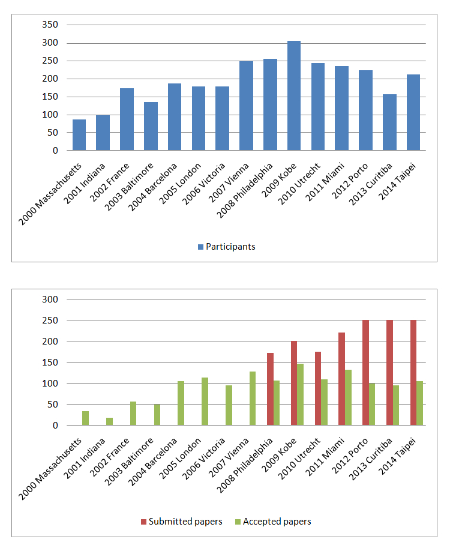

About ISMIR
The annual conference of the International Society for Music Information Retrieval (ISMIR) is the world's leading interdisciplinary forum on accessing, analyzing, and organizing digital music of all sorts. The ISMIR conference embraces the complexity and diversity of music by showcasing ideas and applications that enhance the way in which we interact with music. Centred on MIR, the conference aims to foster dialogue across disciplines by bringing together researchers, developers, educators, librarians, students and professionals, providing multifaceted interaction and cross-fertilization that will benefit a wide range of related fields.
Since its inception in 2000, ISMIR has been the world’s leading forum for research on the modeling, creation, searching, processing and use of musical data. As the term Music Information Retrieval (MIR) indicates, this research is motivated by the desire to provide music lovers, music professionals and music industry with robust, effective and usable methods and tools to help them locate, retrieve and experience the music they wish to have access to. MIR is a truly interdisciplinary area, involving researchers from the disciplines of musicology, cognitive science, library and information science, computer science and many others.
Together with the International Conference on Music Information Retrieval, the Music Information Retrieval Evaluation eXchange (MIREX) community hold its annual meeting. MIREX is a community-based formal evaluation framework coordinated and managed by the International Music Information Retrieval Systems Evaluation Laboratory (IMIRSEL) at the Graduate School of Library and Information Science (GSLIS), University of Illinois at Urbana-Champaign (UIUC).
Until now, the ISMIR conference has been held in the following places:
The evolution of ISMIR conferences in several aspects (participants at the conferences, submitted papers, published papers, etc) are shown in next figure.
In the graph, it can be noted that ISMIR now is a well established conference with an attendance of 200 to 300 people and around 100 papers published in each edition.
Learn about the importance and impact of ISMIR!